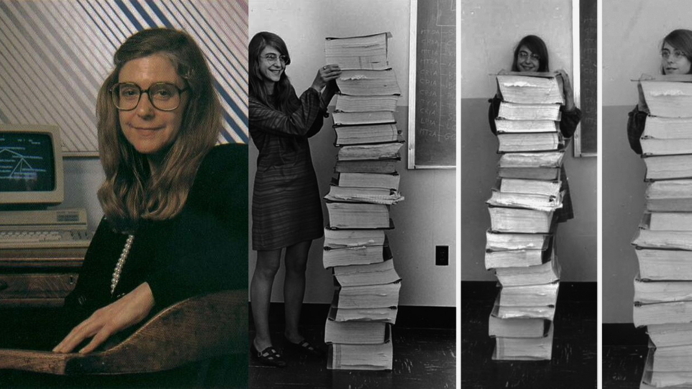

Une pionnière aux
contributions cruciales
Contributions
Au cours de sa carrière, Margaret Hamilton a largement contribué au développemnt de plusieurs outils informatiques. En voici quelques exemples:
Logiciels: |
-
Margaret Hamilton a dirigé et activement participé à la programmation des logiciels embarqués dans les vaisseaux spatiaux qui doivent prendre en charge la navigation et l'atterrissage sur la Lune.
Elle devient responsable de l'équipe chargée du développement du logiciel embarqué utilisé par les missions Apollo puis Skylab (la première station spatiale de la NASA).
-
Dans le cadre du projet SAGE au laboratoire Lincol du MIT,
Margaret Hamilton a aidé à développer les programmes de l'ordinateur prototype AN/FSQ-7 qui permirent
à l'armée de l'air américaine, l'USAF, de détecter de possibles avions enemis durant la guerre froide.
-
Hamilton a aussi travaillé pour Edward Norton Lorenz en 1959, dans le département de météorologie du MIT.
Elle a développé un logiciel de prévision météorologique sur les ordinateurs LGP-30 et PDP-1 au sein du projet MAC de Marvin Minsky.
|
Environnement de développement: |
Après la création de Hamilton Technologies, Hamilton met au point, grâce à l'expérience qu'elle a acquise au cours de ses années à la NASA, un nouveau langage de programmation: l'Universal Systems Language (USL) et son environnement automatique associé, le "001 Tool Suite".
Cet environnement de développement est basé sur le principe du "Development Before The Fact" (DBTF) pour le design de systèmes et le développement logiciel.
- Le DBTF est décrit par Margaret Hamilton comme possédant:
[des] objets orientés système dont chacun intègre le côté fonctionnel, le timing et le côté données d'un système
- Le 001 Tool Suite est décrit par Hamilton Technologies comme suit:
001 (prononcé "double oh one") est un environnement d'ingénierie de systèmes et de développement logiciel entièrement intégré.
Il peut être utilisé pour définir, analyser et générer automatiquement un code complet, intégré et entièrement prêt pour la production pour tout type ou taille d'application logicielle avec un taux d'erreur nettement inférieur et une réutilisabilité nettement plus élevée qu'avec les approches traditionnelles.
Étant donné que 001 a une architecture ouverte, il peut être configuré pour générer (ou s'interfacer avec) des systèmes à tous les niveaux, y compris pour les plates-formes matérielles, les plates-formes logicielles,
les langages de programmation, les bases de données, les systèmes d'exploitation, les systèmes Internet, les systèmes embarqués, les protocoles de communication, les interfaces graphiques et du code hérité au choix.
|
Interface Homme-Machine (IHM): |
Dans les logiciels de l'ordinateur de guidage Apollo, ou AGC,
Margeret Hamiltion a intégré des routines pour l'interface d'affichage qui permettent de garder les astronautes "dans la boucle"
et de ranger les alertes et tâches en fonction de leur priorité.
Ces ajouts ont donné au logiciel la capacité de communiquer de manière asynchrone en temps réel avec les astronautes.
Les programmes et les astronautes fonctionnent alors en parallèle, dans un environnement de système de systèmes. |
Techniques de récupération sur erreur: |
Les techniques de détection et de récupération d'erreurs du logiciel de vol étaient basées sur un redémarrage "tuer et recalculer" qui permettait au logiciel de se restaurer et de repartir d'un "lieu sûr".
Ainsi, grâce à ces techniques et au "priority display" (l'interface d'affichage), son logiciel a la capacité, en cas de surcharge de l'ordinateur ou tout autre dysfonctionnement,
de gérer les erreurs et prioriser des tâches en ordre décroissant de priorité afin d'interrompre celles qui ont moins d'importance.
La priorité de chaque tâche a été assignée manuellement.
|
DSKY, prononcé "diskey" et abbréviation de "display/keyboard", était l'interface entre les astronautes et l'AGC
Démonstration du 001 Tool Suite et de l'USL de Hamilton Technologies